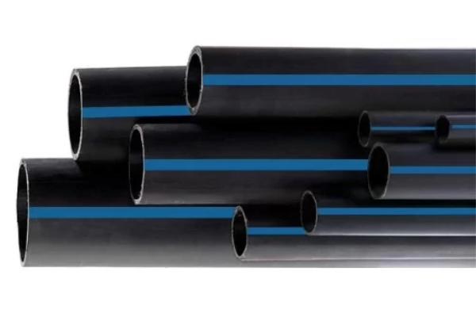
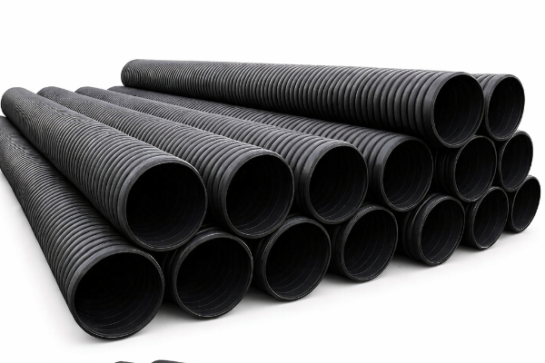
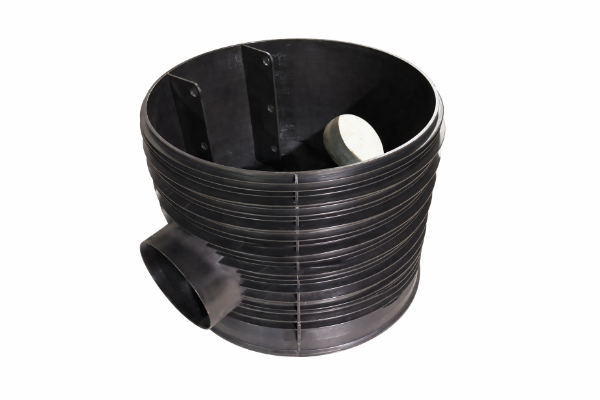
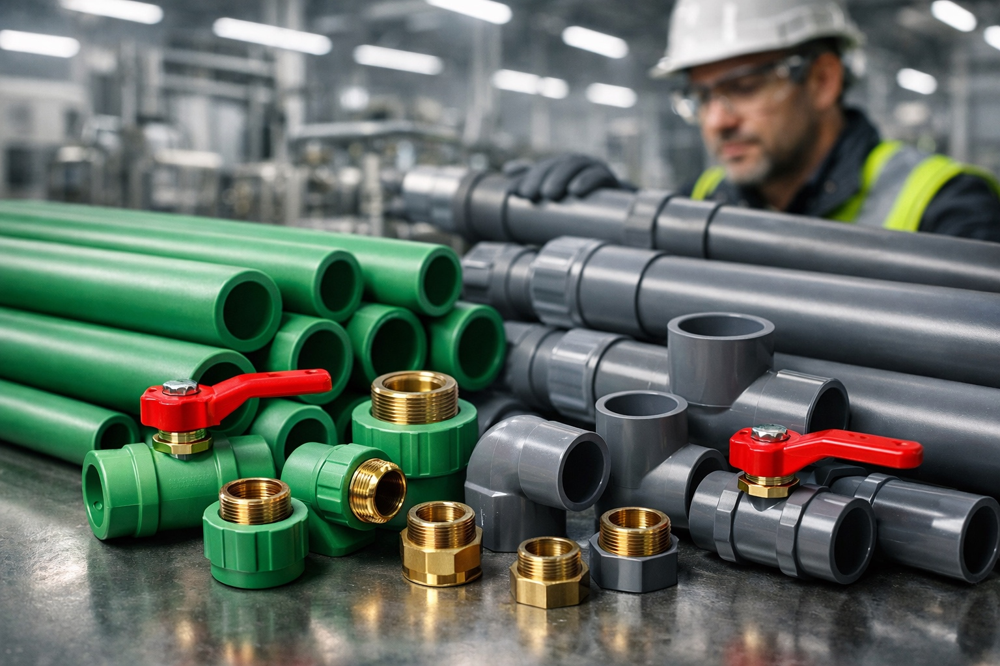
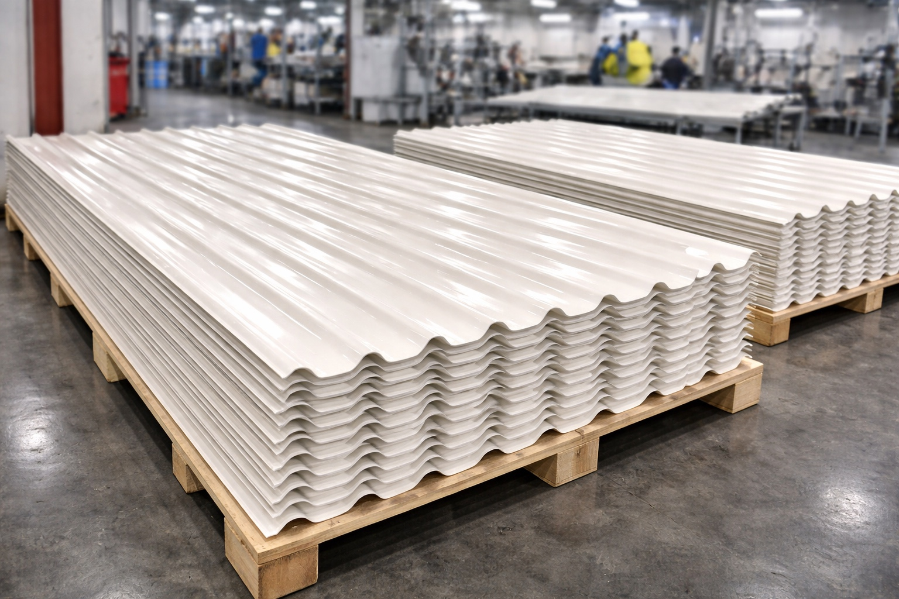
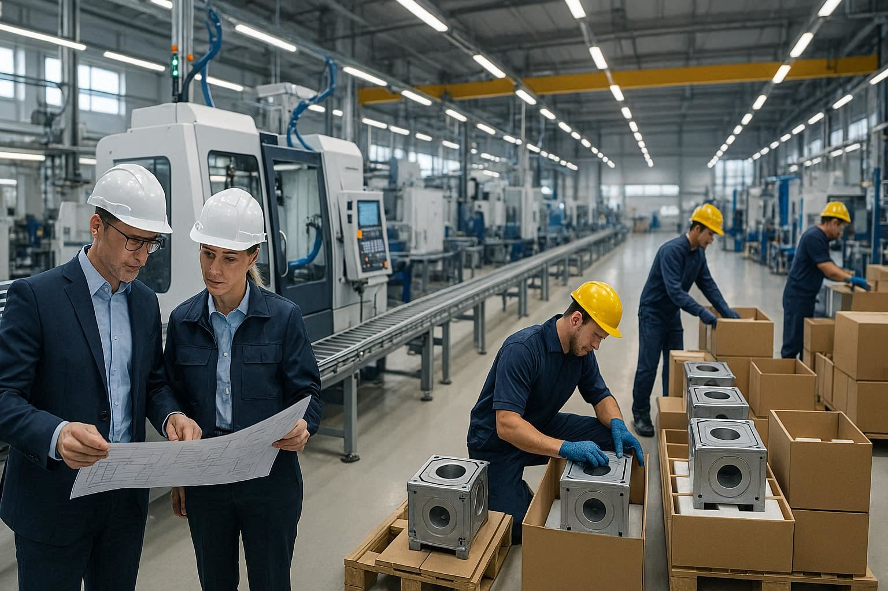

ما نقدمه
في سوريا بلاست لا نقدم منتجات فقط، بل نوفر حلولاً صناعية متكاملة لمشاريع المياه والصرف الصحي وإعادة الإعمار في سوريا.

إنتاج أنابيب بولي إيثيلين عالي الكثافة بأقطار من 32 مم حتى 800 مم، مناسبة لشبكات مياه الشرب والمشاريع البلدية. تتميز هذه الأنابيب بعمر افتراضي يتجاوز 50 عاماً ومقاومة عالية للتآكل والضغط.

أقطار تصل حتى 1200 مم، مصممة لتحمل الأحمال الأرضية العالية وظروف التشغيل القاسية. تُستخدم في شبكات الصرف الصحي للمشاريع الحكومية والسكنية الكبرى.

حلول هندسية متطورة بديلة للبيتون، توفر سرعة تنفيذ وكفاءة تشغيلية أعلى. إنتاج متفرد على مستوى الإقليم مع كامل الملحقات اللازمة لشبكات الصرف الصحي.

خزانات مقاومة للعوامل الجوية والأشعة فوق البنفسجية، تضمن حماية المياه وجودتها. تُصنَّع بأربع طبقات متخصصة تراعي معايير السلامة الغذائية وتضمن المتانة على المدى الطويل.

5إنتاج أنظمة تمديد كاملة للمياه الساخنة والباردة مع الإكسسوارات. تستخدم في شبكات المياه داخل الأبنية والمشاريع السكنية لما تتميز به من مقاومة للحرارة والضغط.

6تصنيع ألواح PVC صناعية — منتج يتفرد به المعمل على مستوى القطر، يلبي احتياجات متنوعة في قطاع البناء والتشييد والتصنيع الصناعي.
للمشاريع الكبرى
نمتلك القدرة الإنتاجية والخبرة الفنية لتلبية متطلبات المشاريع الحكومية والقطرية الكبرى. فريقنا الفني متاح لتقديم الاستشارة وتحديد المواصفات المناسبة لكل مشروع.
تقييم متطلبات مشروعك وتحديد المنتجات والمواصفات الأنسب.
قدرة إنتاجية عالية تضمن التسليم في الوقت المحدد.
إمكانية تصنيع منتجات بمواصفات ومقاسات خاصة حسب متطلبات المشروع.

تواصل معنا الآن للحصول على عرض فني ومالي دقيق.